Perjalanan Waktu Bersama, Sampai Hari Istimewamu
“Hari ini bukan hanya tentang ulang tahunmu, tapi juga tentang semua waktu yang sudah membawaku kepadamu. Aku ingin menuliskan jejak kecil perjalanan kita, dari pertama aku hadir dikehidupan kamu”
1
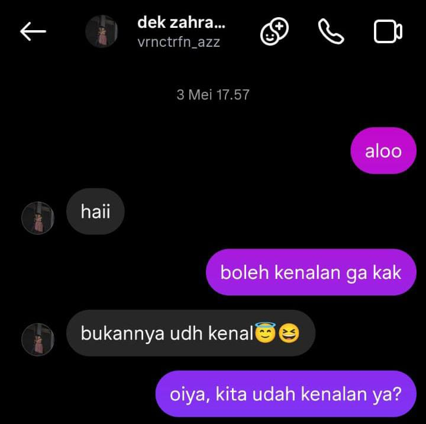
3 Mei 2025
Awal Kita Kenal
Kita bertemu dengan ketidaksengajaan. Tidak ada niat mencari pasangan, hanya dua orang yang ngobrol dan merasa pas. Sejak chat pertama aku merasakan frekuensi yang sama, dan perlahan menunggumu jadi sesuatu yang dinanti bukan hanya
untuk mengisi waktu, tapi karena setiap pesanmu terasa seperti pelukan kecil untuk hari-hariku 💌💫
Kenangan: obrolan pertama yang panjang sampai lupa waktu 🕰️💖
"Dalam cerita yang kamu ucap, aku sangat ingin mendapatkan ketulusan kamu."
2
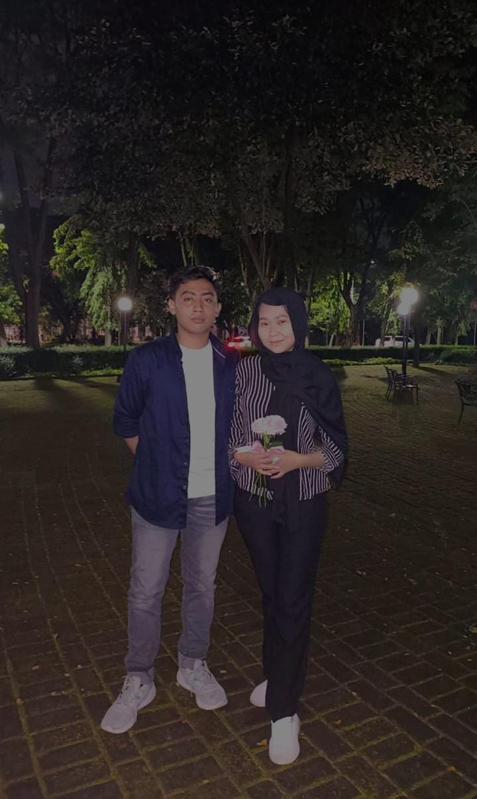
17 Juni 2025
First Date - ITS
Hari itu aku datang ke rumahmu, menjemputmu dengan hati berdebar. Kita melangkah ke ITS, tempat di mana aku memberimu mawar pink sebagai tanda betapa aku mencintaimu. Di sana aku tak hanya mengajakmu jadi pacar, tapi meminta kamu menjadi
pasangan selamanya 💍. Setelah itu kita lanjut makan di Gacoan, menutup hari yang jadi awal cerita pertemuan secara langsung indah kita 🌹🌸💓
Kenangan: pertama kali aku bertemu dengan kamu, dan ijin ke mama kamu👩
3
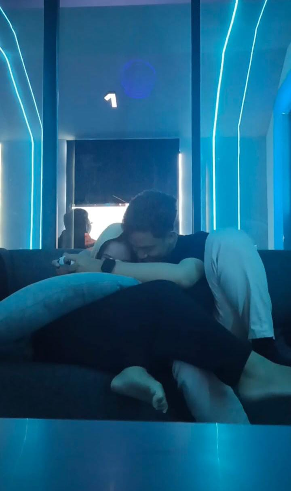
23 Juni 2025
Pertemuan Kedua - Main PS
Game controller di tangan, senyummu jadi cheat code yang tak ada tandingnya. Malam itu kita kalah menang, tapi tak ada yang kalah soal rasa karena sekecil apapun momen bersama kamu terasa mewah🎮💖
Kenangan: aku bisa melihat kamu bahagia secara lepas🥰❤️.
4
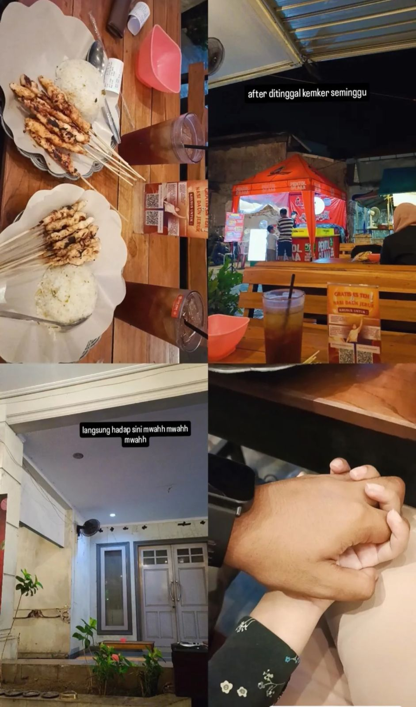
5 Juli 2025
After Kemah Kerja
Setelah seminggu kita terpisah karena kemker, kita akhirnya ketemu lagi. Kita mam sate bareng, dan satu senyumanmu sudah cukup buat menambal rindu yang menumpuk. Di tengah obrolan sederhana itu aku sadar: rindu ternyata manis kalau
dibayar dengan hadirmu🏞️🍢🥰.
Catatan: rindu itu mahal, tapi hadirmu selalu jadi bayaran terindah❤️❤️
"Pertemuan pertama jadi cerita, pertemuan kedua jadi tawa, pertemuan setelah rindu jadi rasa yang paling manis. Dan aku tau, pertemuan berikutnya selalu akan lebih indah."
5
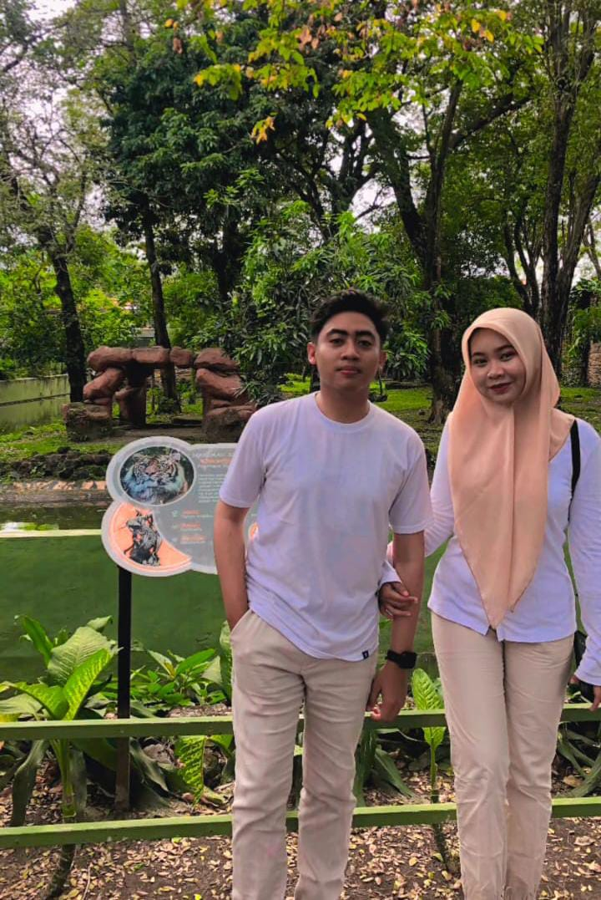
12 Juli 2025
Kebun Binatang Date
Dari pagi hingga sore kita berjalan, menatap binatang satu per satu sambil berbagi cerita kecil yang tak pernah habis. Di sela langkah itu, aku semakin jatuh pada caramu memandang dunia begitu lembut, penuh rasa ingin tahu, dan selalu
membuatku ikut terpukau. Bersamamu, bahkan kebun binatang pun terasa seperti taman cinta yang hanya kita miliki berdua 🌿❤️
Kenangan: pertama kali kita keluar dari pagi hari sampai sore, menikmati waktu penuh cerita dan tawa, seakan dunia cuma milik kita berdua 🕰️💖
6
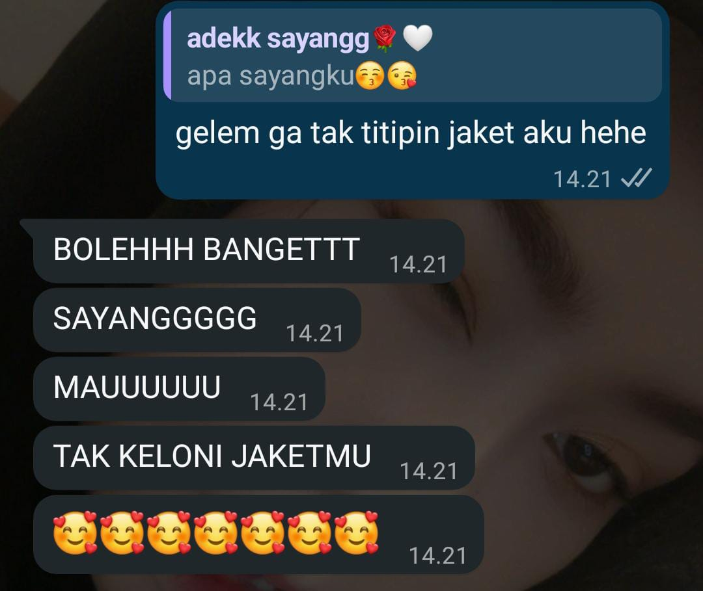
14 Juli 2025
Tunjungan Plaza - Jaketku untukmu
Aku memberimu jaket bukan sekadar untuk menahan dingin, tapi sebagai jejak kecil bahwa aku selalu ada di dekatmu. Dalam hatiku aku berbisik: jika suatu hari kamu merindukanku, biarlah jaket itu memelukmu, jadi pengingat bahwa meski
aku jauh, cintaku selalu di sisimu 🧥🥰
Catatan: setiap kali kamu pakai jaket itu, bayangkan aku yang lagi meluk kamu ❤️
7
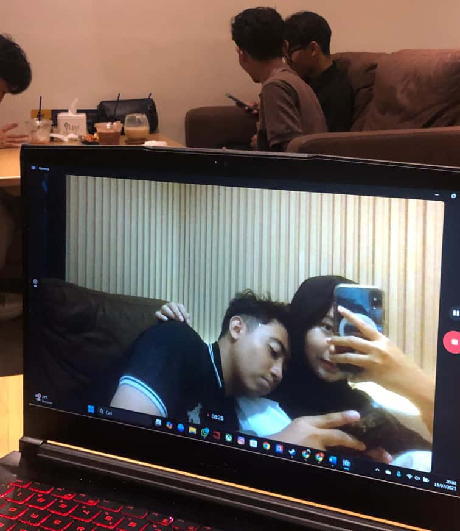
15 Juli 2025
CW Coffee Date - Sebelum Madiun
Sore itu kita bertemu di sebuah kafe, duduk bersebelahan dengan jarak yang nyaris tak ada. Hangatnya pelukanmu menenangkan, seakan ingin menahan waktu agar tak cepat berlari. Di antara obrolan kecil kita, aku hanya bisa memeluk erat,
karena sebentar lagi aku harus berangkat ke Madiun untuk magang. Hari itu bukan sekadar pertemuan, tapi bekal rindu sebelum kita belajar menjalani jarak ☕✈️
Kenangan: pelukanmu sore itu jadi penguat yang kubawa sampai jauh ke madiun 🥰
"Dalam jarak, cinta memang diuji tapi kita menjawabnya dengan rindu yang tumbuh menjadi kekuatan. Dan pada akhirnya, kita berhasil membuktikan bahwa hati yang saling memilih tak pernah bisa dipisahkan oleh jarak."
8
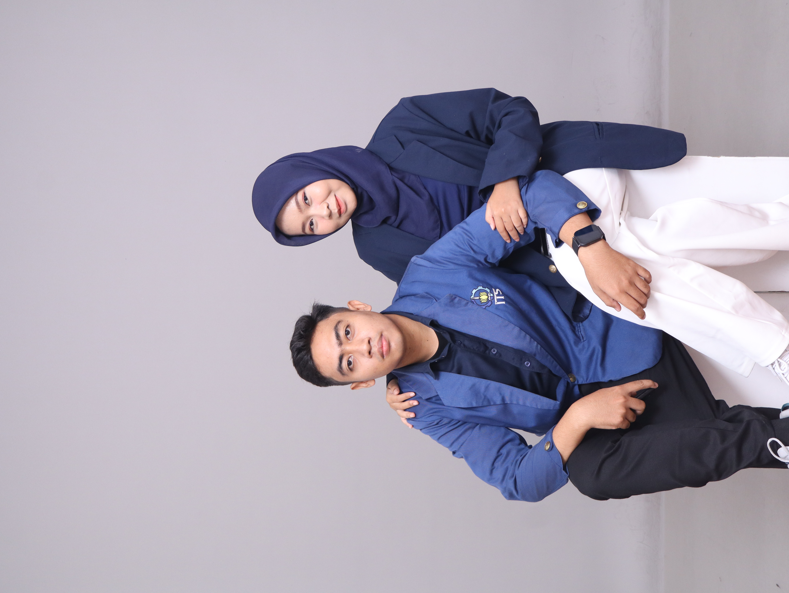
18 Agustus 2025
Studio Foto dan Kodam
Setelah sebulan di Madiun, akhirnya aku kembali ke Surabaya dan menukar semua rindu yang menumpuk dengan hadirmu. Kita rayakan pertemuan itu dengan foto di studio, mengabadikan senyum dan cinta yang tak pernah pudar. Lalu kita jajan
di Kodam, sederhana tapi penuh tawa. Dan sebagai penutup hari, pelukan hangatmu jadi bukti bahwa semua rintangan dan jarak yang kita lewati tak pernah sia-sia, karena ujungnya selalu kembali pada kita berdua 📸❤️
Kenangan: foto yang kini sering kubuka saat rindu 🖼️💖
9
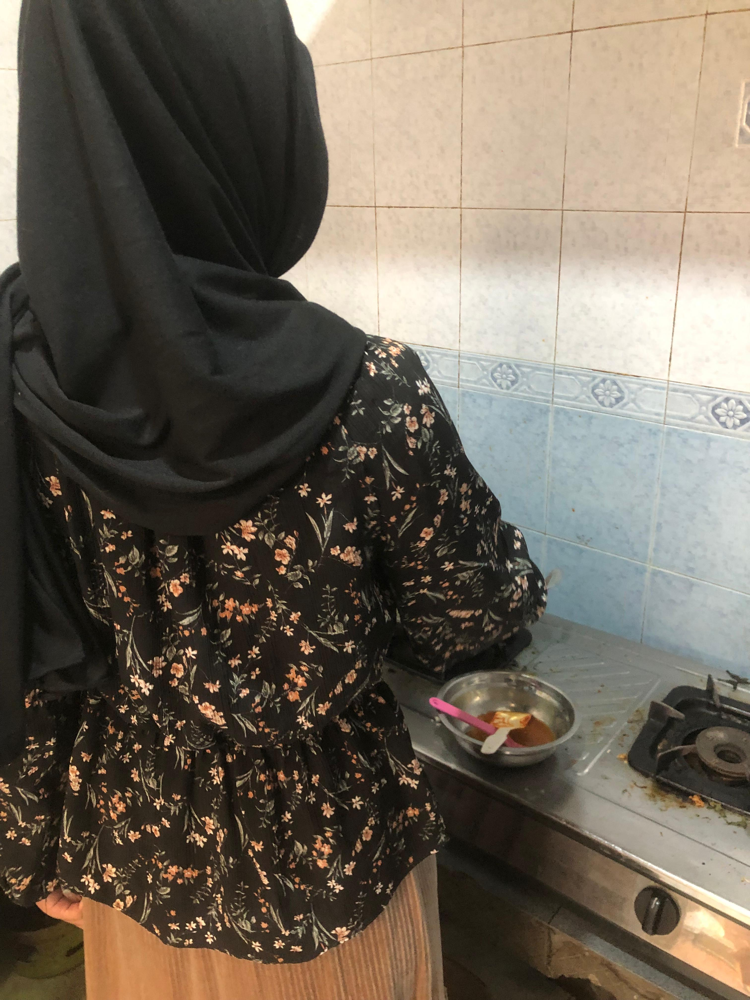
24 Agustus 2025
Diundang Mama Kamu - Awal Keluarga
Setelah pertemuan itu, untuk pertama kalinya aku diundang langsung oleh mama kamu ke rumah. Hari itu kita benar-benar menghabiskan waktu berdua, sederhana tapi terasa begitu berharga. Dari sana aku mulai merasakan, sedikit demi sedikit
kepercayaan keluargamu tumbuh untukku. Bukan hanya tentang kita lagi, tapi tentang langkah kecil menuju awal keluarga yang kita impikan bersama ❤️
Catatan: cinta kita tak cuma soal kita berdua, tapi juga tentang membangun kepercayaan dan keluarga 🏡💖
10
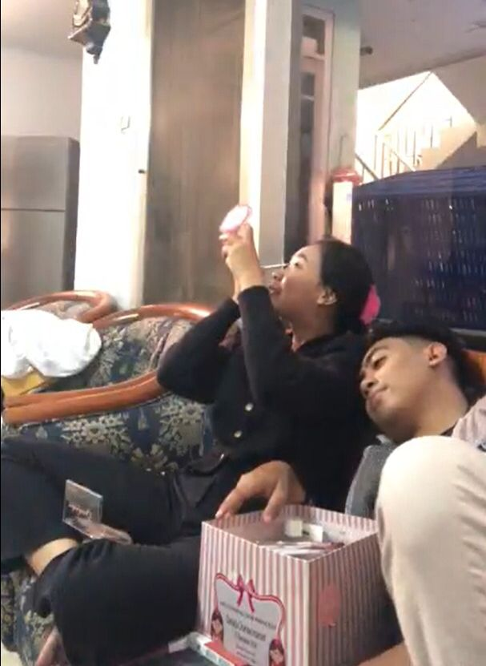
6 September 2025
Belanja Laptop - Rasa Lega Kamu
Aku kembali merasakan kepercayaan dari mama kamu, kali ini kita berdua memilih laptop untuk adikmu. Setelah itu, kita lanjut ke Gacoan part 2, sambil menutup hari denganmu bercerita tentang semua yang selama ini kamu pendam sendiri.
Aku mendengarkan tanpa menghakimi, memeluk setiap cerita dan perasaanmu. Di sini aku tetap untukmu, apapun keadaannya, dan aku bersyukur kamu percaya padaku sepenuhnya 💻❤️
Kenangan: malam itu aku belajar banyak tentangmu, dan aku menerima semua tentang kamu. aku tidak akan pernah meninggalkan kamu sayang 🌹💖
11
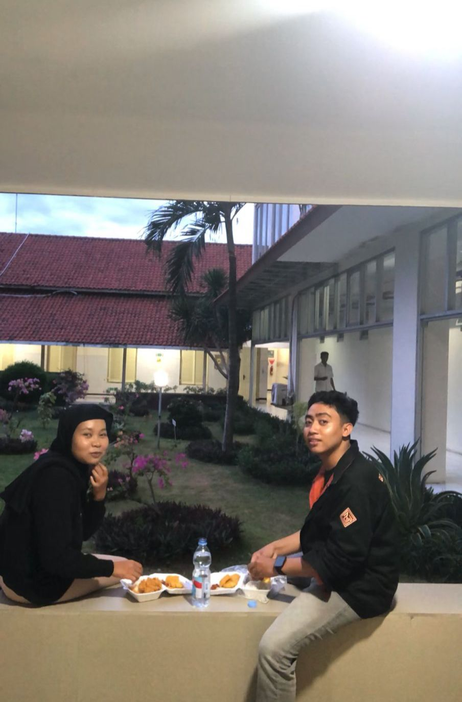
10 September 2025
Pertemuan Tak Terduga - Saat Ayahmu Sakit
Hari itu kita sama-sama pergi ke rumah sakit untuk menjenguk ayahmu. Aku melihat betapa kamu butuh seseorang di sisimu, dan aku tahu aku harus ada di sana. Mencintaimu bukan hanya tentang kita, tapi juga tentang menjaga dan peduli
pada keluargamu. Terima kasih sudah mempercayakan momen berat ini padaku, dan membiarkanku tetap di sampingmu saat semuanya terasa sulit 🏥❤️
Catatan: aku belajar bahwa mencintaimu juga berarti menjaga yang kamu cintai. aku di sini, selalu untukmu 💖
12
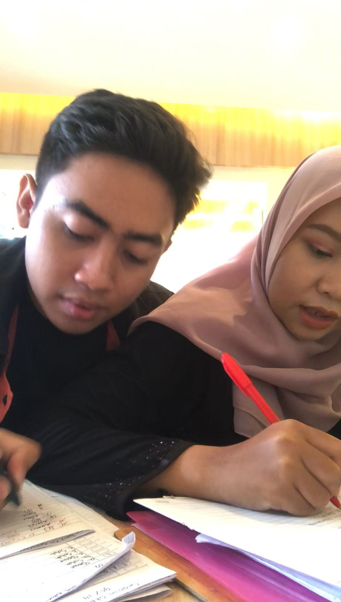
19 September 2025
Study Date - Belajar Bareng
Hari itu kita bertemu untuk belajar bersama, tapi aku sadar, momen itu lebih dari sekadar buku dan catatan. Aku melihat bahwa cinta dan pendidikan bisa berjalan beriringan, dan hubungan kita bukan hanya untuk saat ini, tapi untuk selamanya.
Bersamamu, aku ingin mempersiapkan masa depan yang cerah, dimulai dari langkah-langkah kecil hari ini, sambil menumbuhkan rasa yang tak lekang oleh waktu 📚🌟
Kenangan: buku di meja, tanganmu di dekatku, hati ini tahu kita sedang menyiapkan masa depan bersama 📖💖
“Tanpa rencana, tanpa janji… tapi setiap pertemuan terasa seperti takdir yang sengaja diatur biar kita saling menemukan.”
13
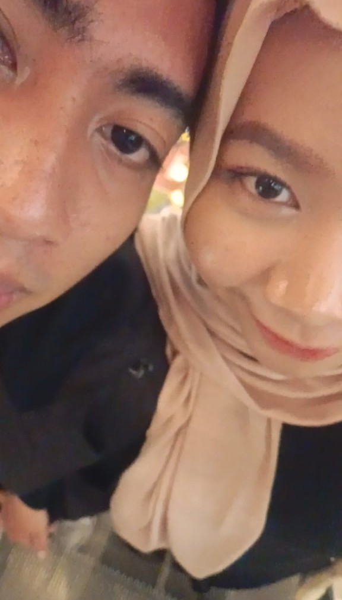
27 September 2025
Nonton - Mie Ayam & Peyuk
Malam itu kita menonton bersama, lalu berjalan pulang sambil saling menggenggam tangan. Mie ayam dan peyuk menjadi saksi manisnya momen kita bisikan kata “sayang” yang lembut dan hangatnya pelukanmu membuatku yakin, aku tak ingin melepasmu
dari sisiku. Setelah beberapa kejadian tak terduga yang membuat hari-hari kita penuh warna, akhirnya kita berhasil mewujudkan wistlish kita, menutup malam dengan tawa, kehangatan, dan rasa syukur karena setiap momen, sekecil apapun,
terasa begitu berharga saat bersamamu 🎬❤️
Kenangan: genggaman tanganmu dan bisikan kata “sayang” di malam itu membuat hatiku hangat aku tak ingin melepasmu 💖
14
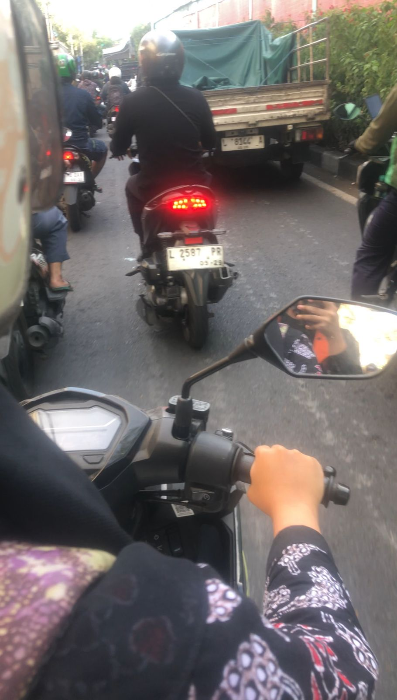
4 Oktober 2025
Danau Unesa
Sore itu aku menjemputmu dari sekolah, lalu setelah izin ke mama kamu, kita pergi ke Unesa. Di sana kita menghabiskan waktu melihat danau sambil mengenang masa-masa maba. Pulangnya, kita saling mengungkapkan rasa sayang dan cinta yang
selama ini tersimpan. Di momen sederhana di rumahmu, aku merasakan kedekatan yang lebih dalam kehangatan, rasa aman, dan kepastian. Aku benar-benar mencintaimu dari hati, sayang… kamu milikku, selamanya 🏫❤️
Catatan: kamu memang milikku sepenuhnya dan selamanya, kita sudah menyatu sayang 🥰💖
15
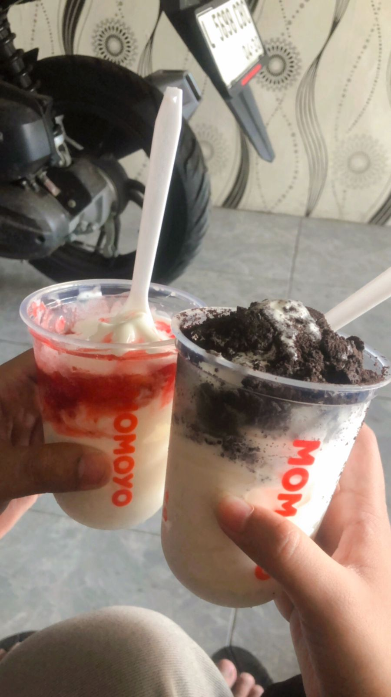
2 Oktober 2025
Bengkel & Momoyo Date
Kita ke bengkel bareng, nunggu motor yang lagi diservis. Setelah itu kita pulang ke rumahmu dan makan bareng sama tetangga, ayah, dan mama kamu. Rasanya hangat banget bukan cuma perut yang kenyang, tapi hati juga terasa penuh. Lalu
kita lanjut kamu ambil uang, terus ke Momoyo beli es krim kesukaanmu, dan sempat cuci motor juga bareng-bareng. Sore itu ditutup dengan kita kembali ke rumahmu, denger cerita orang tua kamu tentang masa-masa mereka nikah dulu.
Di situ aku diam-diam merasa: aku sudah benar-benar diterima di keluargamu, sayang ❤️🤍🌹
Catatan: semua momen itu buat aku yakin, aku ga cuma dicintai sama kamu, tapi juga benar-benar diterima di keluarga 🤍
16
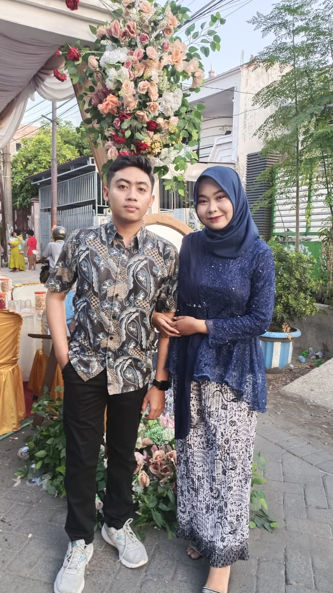
10 Oktober 2025
Simulasi Lamaran
Hari itu aku datang ke rumahmu, sesederhana itu. Kamu jadi penjaga buku tamu, aku di sampingmu, dan kita foto bareng. Cuma satu story, tapi tiba-tiba semua orang ngira kita lamaran. Aku senyum dan di dalam hati… rasanya hangat banget.
Mungkin karena di balik itu, ada harapan kecil yang diam-diam tumbuh bahwa suatu hari nanti, foto itu bukan cuma candaan, tapi kenyataan yang kita jalani bersama 💍❤️
Catatan: semoga suatu hari nanti, momen ini benar-benar jadi nyata, dan kita bisa jalani semuanya bersama, sayang 🥰💖
17
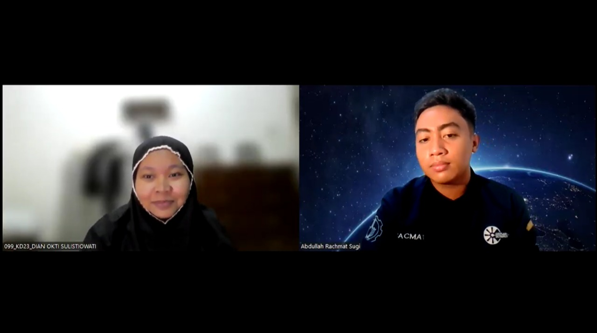
Beberapa Hari Lain
Rangkaian Detik yang Membentuk Kita
Ada ribuan detik yang mungkin tak tertulis di sini: pesan singkat “sudah makan?”, "sayang jangan lupa sholat", "hati-hati dijalan sayang", dan perhatianmu yang sederhana tapi tulus. Semua hal kecil itu tak kalah penting dari kenangan
diatas, karena cinta kita sesungguhnya hidup di momen-momen kecil yang sering tak terlihat di setiap perhatian dan kehangatan yang kau berikan, aku merasa utuh dan dicintai 🌹💖
Catatan: terima kasih sudah menjadi tempat pulangku dan aku akan selalu jadi tempat pulang yang nyaman buat kamu. pulang ke aku terus ya sayang 🏡❤️
♡
Soon
Kisah Berikutnya
Bab ini baru saja kita mulai menulis. Masih banyak halaman kosong yang menunggu tawa, rencana, dan mimpi kita. Aku ingin mengisinya bersamamu, satu langkah kecil setiap hari, hingga setiap halaman dipenuhi cinta, kebahagiaan, dan kenangan
yang tak akan pernah pudar. Bersamamu, aku yakin kisah kita akan indah selamanya ❤️📖
Pesan: Yuk sayang kita wujudkan semua impian indah kita🤍🌹